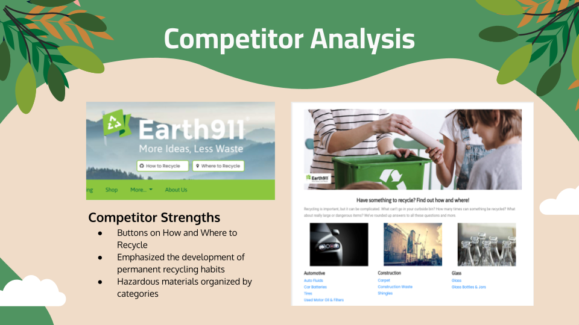

Our quantitative survey included 20 respondents that asked demographic information such as age, income, and location. We found that 20% of our respondents were located in a city versus suburb or rural area. The survey asked respondents about their knowledge in different areas of recycling as to better understand our users and if they would like more information about recycling. As you can see from the data, 55% of respondents wanted to learn more about recycling batteries. Since batteries are categorized under hazardous waste, we wanted to dig deeper by conducting qualitative interviews so see if we could narrow our sustainability focus even more.

With our problem statement we knew what we needed to solve, and wanted to imagine a journey that Nora would go on if our team were to solve these problems, and meet her needs

We were now ready to start ideating a solution. We started looking for competitors who provide similar recycling services. Our biggest standout was earth911.
-We found they had a lot of strengths we wanted to implement for our project, however, the usability was one of their biggest weaknesses along with their aesthetic.
-After reviewing other competitors, we were able to narrow the focus for our website and concentrate on the proper disposal of hazardous material and the impact on the environment.
 Where
Where
 Results Page
Results Page